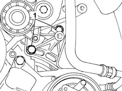
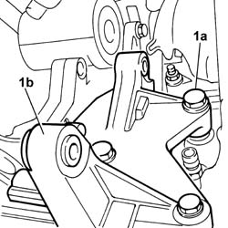

5530A40 ALTERNATOR BRACKETS/MOUNT/SPACER - R R
- Path
- Procedures > 55 ELECTRICAL EQUIPMENT > 5530 CURRENT GENERATION > 5530A ALTERNATOR AND COMPONENTS > 5530A40 ALTERNATOR BRACKETS/MOUNT/SPACER - R R
- Kind
- repair procedure (removal / refitting; the operation number is the code)
- Applies to
- engines: 3.0 24V V6; all production periods
- Interactive page
- https://sloeber94.github.io/elrnDB-fUlss/en/#/179007562
Applies to: engines: 3.0 24V V6; all production periods
 Removing
Removing
 Refitting
Refitting- Position the vehicle on the lift.
- Disconnect the negative battery terminal.
Description | Connector | |
|---|---|---|
. | Battery | A001B |
Op. 4450B04 RIGHT FRONT WHEEL R R
Op. 7055B91 RIGHT FRONT WHEEL ARCH LINER - R.R.
Op. 4410D16 BRACKET (ONE) RETAINING CHASSIS TO BODY - R R
- Loosen the power steering pump pulley fastenings
See in Op. 1092G10
Op. 1092C14 POWER STEERING PUMP/SELF LEVELLING SUSPENSION PUMP PULLEY - R + R WITH BELT REMOVED
Op. 5050A10 WINDSCREEN WASHER FLUID RESERVOIR (IN ENGINE BAY) - R+R
See in Op. 1092G21
1. Undo the bolts securing the alternator mounting.

Applies to: engines: 3.0 24V V6; all production periods
1. Undo bolts (1a) securing the alternator mount (1b) to the engine block and remove it from the engine.

Applies to: engines: 3.0 24V V6; all production periods
Refitting
Removing- Position the alternator mount, screwn in the bolts and tighten to the recommended torque.
 | Value - daNm | Fastening | Component | Ø |
|---|---|---|---|---|
. | 4 | Bolts | ALTERNATOR BRACKETS/ MOUNTING/SPACER ALTERNATOR - R.R. |
- Tighten the alternator mount bolts and tighten to the specified torque.
| Value - daNm | Fastening | Component | Ø |
|---|---|---|---|---|
. | 2.5 | Bolts | ALTERNATOR BRACKETS/ MOUNTING/SPACER ALTERNATOR - R.R. |
See in Op. 1092G21
Op. 5050A10 WINDSCREEN WASHER FLUID RESERVOIR (IN ENGINE BAY) - R+R
Op. 1092C14 POWER STEERING PUMP/SELF LEVELLING SUSPENSION PUMP PULLEY - R + R WITH BELT REMOVED
See in Op. 1092G10
Op. 4410D16 BRACKET (ONE) RETAINING CHASSIS TO BODY - R R
Op. 7055B91 RIGHT FRONT WHEEL ARCH LINER - R.R.
Op. 4450B04 RIGHT FRONT WHEEL R R
- Connect the negative battery terminal.
Description | Connector | |
|---|---|---|
. | Battery | A001B |
- Remove the vehicle from the lift.
Topics linked from this page (7)
- 1092C14 POWER STEERING PUMP/SELF LEVELLING SUSPENSION PUMP PULLEY - R + R WITH BELT REMOVED
- 4410D16 BRACKET (ONE) RETAINING CHASSIS TO BODY - R R
- 4450B04 RIGHT FRONT WHEEL R R
- 5050A10 WINDSCREEN WASHER FLUID RESERVOIR (IN ENGINE BAY) - R+R
- 5040A24 AIR CONDITIONING COMPRESSOR - PARTIALLY R.R. FROM THE ENGINE WITHOUT DISCONNECTING THE PIPES
- 5530A10 ALTERNATOR - R+R
- 7055B91 RIGHT FRONT WHEEL ARCH LINER - R.R.